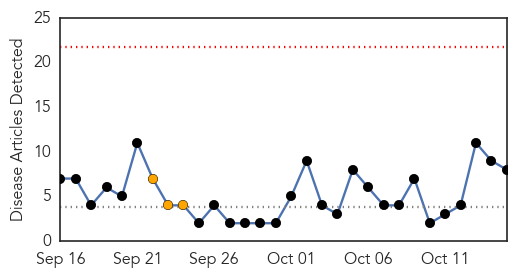

Cholera
30-Day Web Trend
0 alerts, 3 warnings

30-Day Twitter Trend
3 alerts, 1 warnings

Article Locations

Article Confidences

Top Articles:
- 0.995
- Cholera infects almost 200
- 0.990
- Haitian cholera victims call for UN accountability
- 0.990
- Haitian cholera victims call for UN accountability - Haiti
- 0.863
- We are Not Hacked: Centenary Bank Opens Up On ATM Breach
- 0.863
- UNRA PROBE: PEC Consultants Approved Baseless Payments to Dott Services
- 0.863
- Ministry of Energy Commences Sector Review
- 0.863
- Kenyatta Rallies EALA to Expedite Regional Integration Process
- 0.826
- The simplest way to save lives – in pictures
Top Tweets:
- 0.852
- Highly Recommended: Haiti’s Earthquake Was Devastating. The Cholera Epidemic Was Worse. By https://t.co/0OlWdIisWb
- 0.807
- RT: cholera Haiti https://t.co/KoTGzEe1Nx
- 0.805
- RT: "Earthquakes are unavoidable. Human rights tragedies are not." On the cholera epidemic in Haiti: http://t.co/humINvOiyo
- 0.742
- RT: Curious, @UN, what's your tipping point? 9600+ dead, 776,000+ sick. Haiti cholera count FaceJustice
- 0.688
- RT: cholera protestors gather today at the UN HQ in Haiti, no longer out of sight, asking to FaceJustice. http://t.co/R…
- 0.652
- RT: I remember when cholera first ripped thru Haiti 5 yrs ago; 8800 deaths + nearly 1 mill infected, still no justice. https://t.…
- 0.571
- RT: 5 yrs, 9000 dead, no compensation, no one disciplined or admitted responsibility FaceJustice Haiti cholera http://t…
Unknown
30-Day Web Trend
0 alerts, 0 warnings

30-Day Twitter Trend
1 alerts, 0 warnings
Article Locations

Article Confidences

Top Articles:
- 0.939
- More corruption within the CDC: Lyme Disease Community blows the whistle -- Health & Wellness -- Sott.net
- 0.931
- Study Links Flu Vaccine to Short-Term Drop in Stroke Risk
- 0.923
- Health Ministry stymied by mystery illness spreading across Assiut
- 0.917
- Chicago Tribune
- 0.917
- Chicago Tribune
- 0.917
- Chicago Tribune
- 0.917
- Chicago Tribune
- 0.915
- Salmonella outbreaks here and abroad: Cucumbers, small turtles and turkey
- 0.914
- Are London’s Lyme disease hotspots safe and is a vaccine on the horizon?
- 0.912
- Almost 70 people infected with scabies during outbreak at Burlington hospital
- 0.907
- Your Northwoods News Leader and NBC Affiliate
- 0.894
- Botswana becoming shorter and duller – blame it on Water Utilities Corporation
- 0.894
- Staff deaths in India's largest TB hospital underreported
- 0.888
- Vesicular stomatitis virus hit Fremont County; CWC taking precautions
- 0.803
- Strengthened Health Services in District Hospital Improves Public Health in Balkh Province - Afghanistan
- 0.797
- Walgreens, AmeriCares deliver flu shot to 5,000 uninsured patients
- 0.796
- Hospitals Are Moving (Slowly) to Electronic Medical Records
- 0.786
- Tomato Grower Added to Chipotle Salmionella Lawsuit
- 0.786
- Why Is the CDC Allowing a Private Group to Determine Federal Policy on Lyme Disease?
- 0.767
- Lyme disease cases remains high in Pennsylvania
- 0.762
- Health ministry pushing to arrest maternity deaths –with help of media, public at large
- 0.727
- Top New York restaurant group to eliminate tipping
- 0.727
- Pistorius to be released from prison, placed under house arrest
- 0.727
- Obama to maintain 9,800 troops in Afghanistan ‘through most of 2016’
- 0.726
- Cryptosporidium cases continue to grow in Knox County
- 0.724
- Two new suspects identified over 1988 Lockerbie bombing
- 0.724
- Turkey arrests 10 more over 'Ankara bombing tweets'
- 0.724
- Guinean opposition leader Diallo pulls out of vote, claims 'widespread fraud'
- 0.724
- Burma signs ceasefire deal with eight rebel factions
- 0.724
- Condé poised to win second term as Guinea president
- 0.724
- Air France suspends five workers over shirt-ripping attack
- 0.700
- Indian Express
- 0.687
- In Celebration of Dental Hygiene Month, Dr. Parviz Roshan Invites Gum Disease Sufferers to Experience Minimally-Invasive Laser Dentistry in Vancouver, BC
- 0.684
- Vaccine-derived polio case raises ugly head in Laos
- 0.682
- Campaign art: Fighting neglected tropical diseases one step at a time
- 0.653
- Facebook app tracks infectious diseases
- 0.643
- Doctors: It's never too early to get a flu shot
- 0.634
- Migration: Thousands crossing the Balkans exposed to unnecessary suffering
- 0.626
- New health director takes the helm
- 0.613
- Drinking water advisories hit more than half of Manitoba First Nations
- 0.608
- Experts call for awareness, prevention against fluorosis, arsenic poisoning
- 0.575
- Community dentists promoting water fluoridation
- 0.574
- Rise in Mosquito Population Raises Concern for Transmitted Virus
- 0.567
- Battling the migraine monster
- 0.565
- Ministry warns health practitioners against issuing fake sick leave
- 0.561
- VA partners with Walgreens for free flu shots
- 0.558
- Brazilian researcher details efforts to find future-generation smallpox vaccines
- 0.545
- Should the Annual Physical Be Scrapped?
- 0.526
- 90% of Saskatchewan First Nations have faced bad drinking water
- 0.523
- Despite benefits, not enough people washing their hands with soap
Showing top 50 articles...
Top Tweets:
- 0.973
- .@cakeupfacexo Flu vax protects against A & B viruses. Flu vaccine helps protect against flu.
- 0.938
- .@Mrspoofa Flu vaccines cannot cause the flu. However, some people experience mild flu-like symptoms after vaccination notimeforflu
- 0.875
- .@cheryl888888 Fluvax cannot cause flu. Some people experience mild flu-like symptoms after vaccination. notimeforflu
- 0.823
- RT: Todos hablando de qué van a hacer en Las Vegas. Yo lo único que quiero es ir a comprar cosas a la tienda de El Precio de…
- 0.799
- RT: El HR de Encarnación en la 6ta viajó 457 pies, 2do más largo en postemp desde que ESPN comenzó medirlos en 2009 (Napoli, 460…
- 0.739
- .@Mrspoofa Nasal spray is a live attenuated vaccine, injected flu shot is a killed virus vaccine notimeforflu
- 0.699
- RT: En El Precio de la Historia hay gente tipo "Experto en cajitas musicales del Holocausto".Y yo que creí que ser WeddingPlanne…
- 0.688
- En el precio de la historia,cualquier duda con las firmas llaman a un grafólogo forense,ah ok.
- 0.644
- .@curly1603 You can still get a flu shot if you are sick without a fever. notimeforflu @MinuteClinic
- 0.637
- Flu viruses are spread mainly by droplets made when people with flu cough, sneeze or talk notimeforflu
- 0.628
- In addition to getting a flu vaccine, protect your family from flu by practicing good health habits: http://t.co/dYPFAhe70n notimeforlflu
- 0.617
- CDC does not recommend one flu vaccine over the other this season. The important thing is to get a flu vaccine every year. notimeforflu
- 0.613
- RT: Los han ganado 9 de sus últimos 10 partidos en los que enfrentan la eliminación desde la Serie de campeonato en 1985.
- 0.590
- RT: In addition to getting a flu vaccine, protect your family from flu by practicing good health habits: http://t.co/dYPFAhe70n n…
- 0.574
- For more flu prevention tips, follow. notimeforlfu
- 0.536
- .@mulysa32 you can get a flu shot if you have a cold without a fever, or if you have another mild illness.notimeforflu
- 0.523
- Que versionen una canción de luis silva en guaracha es de los peores daños que se le hacen al país